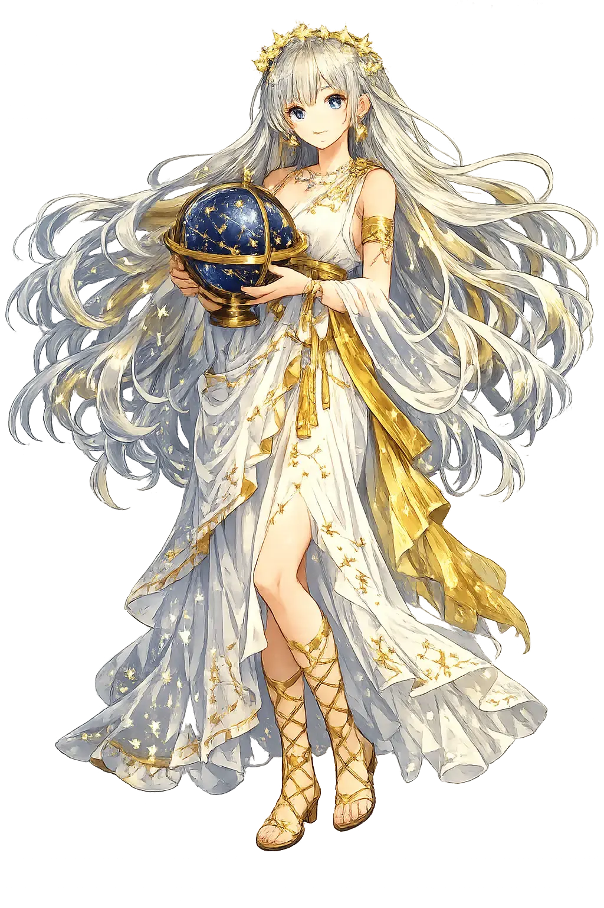

Stories of Ouranía
Ouranía's mythology is quiet but persistent: a place in the first catalogue of the Muses, an invocation-name for every poet of the heavens, a philosophical double of heavenly love, and one buried tragedy. She is less a protagonist than a presence — the mind that turns the chaos of stars into cosmos.
When Hesiod, tending sheep on Helicon, was given the staff of song by the Muses themselves, he repaid the gift with their genealogy (Theogony 53–62, 915–917). Zeus lay nine nights with Mnēmosýnē, Memory, 'forgetting nothing of what is, what shall be, and what was before,' and nine days later she bore nine daughters who sing on Olympus the ways of the gods and the fame of men. Ouranía is named among them, near the end of the catalogue — and where her sisters receive the lyre, the flute, the dance, and weeping tragedy, later tradition (Hyginus, Fabulae praefatio) gives her the only province that is not an art at all: the motions of the world and the stars. The genealogy makes memory the mother of every science; astronomy, the youngest daughter, is what memory does when it looks up.
Every epic poet opened by invoking the Muse, but the writer of an astronomical poem needed a specialist, and Ouranía became her. The tradition runs unbroken from the Hellenistic star-catalogues, which open with pious addresses to Zeus and the Muses, through Roman didactic verse — Ovid sets her among the singing Muses (Metamorphoses 5.260–268) and Hyginus assigns her mundi et siderum motus, the motions of the world and stars — into the Middle Ages, when 'Urania' simply became the name of the poetry of the heavens. Her attributes in art, the celestial globe and the pair of compasses, are the tools of an exact science. The Muse of mathematics never needed to be anything less than precise: hers is the song that must scan, or it is not a song.
In Plato's Symposium it is Pausanias of Athens who splits Aphrodítē — and love itself — in two (Symposium 180d–e; cf. Xenophon, Symposium 8.9–10). There is the Common Aphrodite, daughter of Zeus and Dione, whose devotees 'love the body rather than the soul'; and there is the Heavenly Aphrodite, Aphrodítē Ouranía, motherless, sprung from Ouranos alone — and her followers love what is noble and what endures. The speech founded the Western distinction between vulgar and transcendent erôs, and it did so etymologically: the same adjective, ouranios, 'heavenly,' that names the Muse also names the highest kind of love. The Muse and the goddess share the word because both traditions understood the same thing — whatever draws the mind upward, whether a theorem or a beloved, walks the same road.
The saddest notice of Ouranía in Greek literature is a few sentences in Pausanias' tour of Boeotia (9.29.6–8): Linus, son of Ouranía and Amphimarus, was the fairest of singers — and Apóllōn, they say, slew him for rivalling him in song. The tale doubles an older Linus, son of Apóllōn and the princess Psámathē, exposed and torn by dogs, and Pausanias records the confusion himself, noting that a dirge called the linos-song was sung at vintage and harvest across Greece. That the Muse of the deathless stars should have a mortal child, murdered for singing too well, is the tradition's quiet counterweight to every claim that heaven protects its singers. The lament that bears the boy's name outlived both boy and god — which is, perhaps, the Muse's only answer.
Heavenly Song and the Starry Discipline
Ouranía is the Muse of astronomy and the mathematical sky. Where her sisters govern epic, history, and dance, she lifts the poet's eye to the sphere of the fixed stars and the wandering planets. In Hellenistic and Roman art she appears with celestial globe and compasses — the only Muse whose discipline is an exact science, and whose song is the measured harmony of the heavens.
She turns a starry sphere in her hand — the whole cosmos made small enough to read, one model of the universe at a time.
Astronomy was geometry before it was physics; her compasses divide the zodiac into measured arcs.
The Pythagorean music of the spheres — number made audible — is the song she conducts.
Her science served the calendar, the harvest, and the ship: every court astronomer and weather-keeper worked under her eye.
From the original script to the living URL
Οὐρανία
The name in its original Greek form. Ouranía (Οὐρανία) is attested in the source tradition — “Heavenly”. Its acute accents carry the full phonetic and orthographic weight of the source tradition.
ourania
Reduced to plain ourania, the name loses everything that made it specific: acute accents. What remains is an ASCII string that machines can parse but that no longer speaks with its original voice.
Ouranía
The Unicode restoration recovers what ASCII flattened. Ouranía restores acute accents, returning the name to its original written dignity. The domain encodes to Punycode, but the browser displays the truth.
Ouranía.com → xn--ourana-7va.com
The non-ASCII characters in Ouranía are encoded while the ASCII remains visible. To the DNS, it is Punycode. To humanity, it is Ouranía.
Owned, ideal, and ASCII forms of Ouranía
Ouranía
Restores Οὐρανία. The live temple domain — ouranía.com.
ourania
Flattens Οὐρανία. The plain ASCII fallback — what DNS and legacy systems see.
How Ouranía was spoken
How Ouranía is preserved in writing
A bespoke provenance study for Ouranía is being prepared by the PUNICODEX scholarly team.
Contribute scholarly provenance →Ouranía teaches an ancient discipline: look up. In an age of downward-glancing screens, her domain is a call to recalibrate. The stars do not need us, yet we have always needed them — for navigation, for calendar, for the sense that our small lives are part of a larger pattern.
Enter Extended Lore